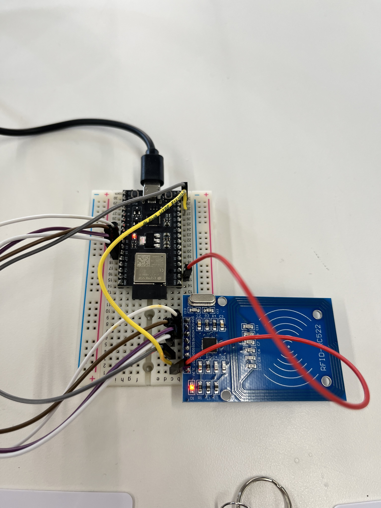
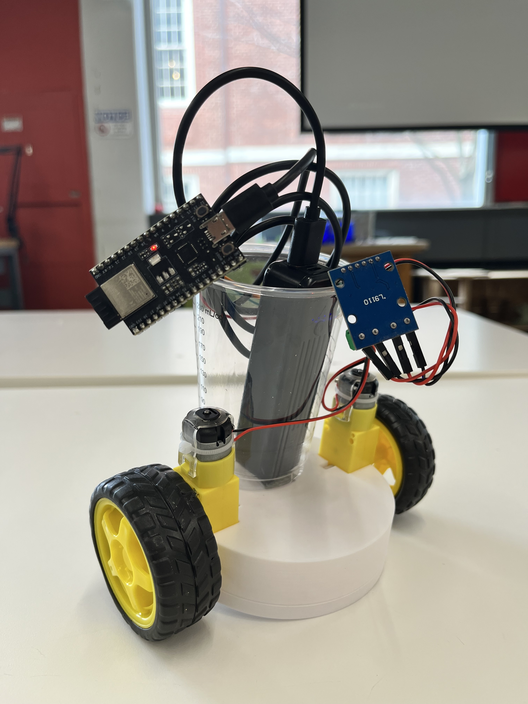
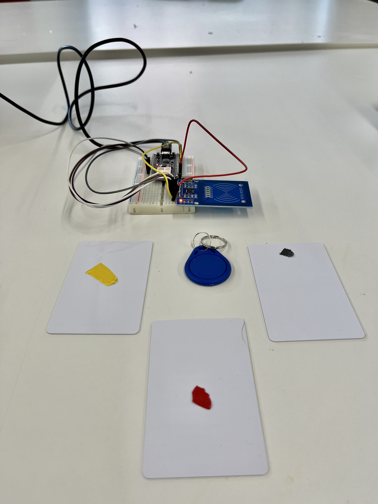
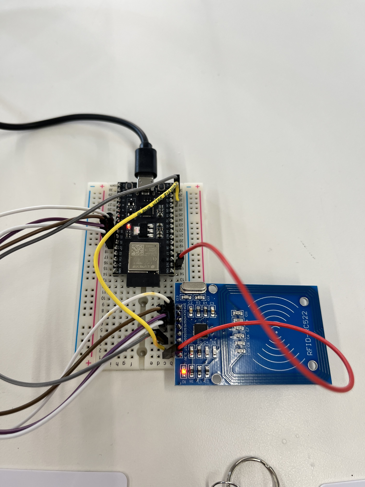
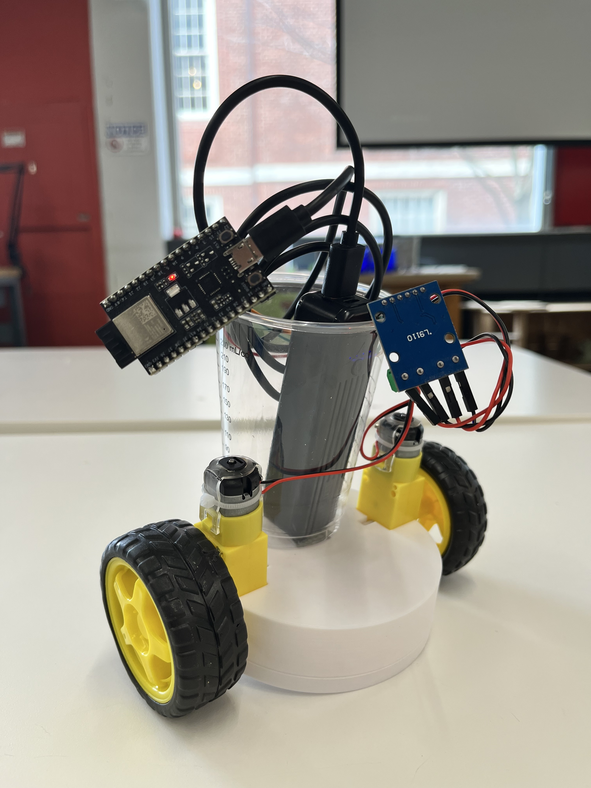
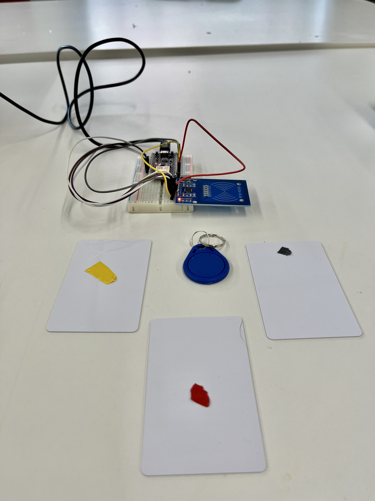

Week 9
Hook Me Up... To The Internet!: Bluetooth, Internet, Radio
Topics Covered:
- How To
- Connect to Internet, Bluetooth, Radio
- Explorations
- Group Project: Boomba
The assignment:
- Work with a partner or group of 3. Program one or more microcontroller(s) to obtain and respond to information from the internet or radio. Your project should include at least one input and one output.
1. Group Project: Boomba
I worked with Connor and Jackson, my dear tablemates, to create a cute lil guy on wheels who moves forward, backwards, left, or right in response to corresponding RFID tags.
   The design:
One DXF file later...
In Aspire:
I used the pocket toolpath to flatten around the words for the blade, and

I found Aspire surprisingly intuitive with all the tools I needed to finish the design on. It seemed that there were still too many fine details for our 1/8th inch end mill to handle,

Since the ShopBot and the 1/8th inch drill was unable to get the finer details, I drilled the holes for the "s" and the "e" myself with the drill press:


   The design:
- I outlined the knife used near the end of the movie hehe:

- And I wanted the blade to say "Knut needs a Knife" -- but in the typeface of Knives Out's title card:
- Here's the Knives Out title card:

-
I used the title card + a picture of Nic Dennis's Agatha Font + Adobe Illustrator's handy-dandy image trace feature:
Agatha Font:
Initial designs:
And here's my first knife design:
- Here's the Knives Out title card:
- I added some custom detailing to the handle, including spirals.
Unnecessary detail on that:- To create a similar spiral, you can
One DXF file later...
In Aspire:
I used the pocket toolpath to flatten around the words for the blade, and
I found Aspire surprisingly intuitive with all the tools I needed to finish the design on. It seemed that there were still too many fine details for our 1/8th inch end mill to handle,
Since the ShopBot and the 1/8th inch drill was unable to get the finer details, I drilled the holes for the "s" and the "e" myself with the drill press:
I even got OoM
2. Molding and Casting: Bulbasaur + Shotglasses


When I went home, noticed some Oo Moo in my hair! :D It really gets everywhere.


Future Hope: Shelf/Table
I was hoping to make a tiny shelf table with the CNC Machine and OSB. Maybe I'll have time in future.